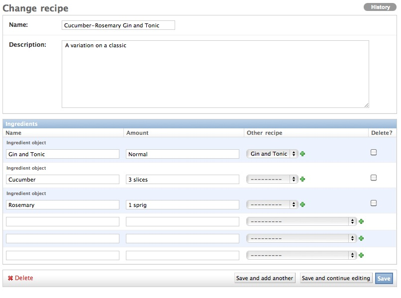

Recipe 70
Run: python tools/configure.py -s 70 to install and run this recipe.
Two different models are often used, one related to another. These are normally shown to users in the Django interface as two separate pages, often a few mouse clicks away. Instead of this, you can set up one form that contains the forms for the other model so they can be edited inline. It’s probably simpler to show a quick graphic to demonstrate this.
In this case we’ve got a recipe, a “Cucumber-Rosemary Gin and Tonic” [1] and some ingredients. Let’s take a look at the two models that setup this relationship:
1 2 3 4 5 6 7 8 9 10 11 12 13 14 15 | from django.db import models
class Recipe(models.Model):
name = models.CharField(max_length=255)
description = models.TextField()
def __unicode__(self):
return self.name
class Ingredient(models.Model):
name = models.CharField(max_length=255)
amount = models.CharField(max_length=255)
recipe = models.ForeignKey(Recipe, related_name="recipe")
other_recipe = models.ForeignKey(Recipe, related_name="other_recipe", blank=True, null=True)
|
The Ingredient model is slightly unusual because it has two keys pointing back to the recipe. The recipe field points to the Recipe model. However, some drinks may contain ingredients which are another recipe. There’s no point in covering how to make the recipe every time. Instead this is pointed to once and a reference made. Here it’s just a normal Gin and Tonic with some additions. This pointer to another recipe is the other_recipe field and is optional.
So next we’ll need to register these models in the Django admin. We’ll do this in the usual way. For example, in admins.py we’ll have:
1 2 | admin.site.register(Recipe, RecipeAdmin)
admin.site.register(Ingredient, IngredientAdmin)
|
The admin registration for a Recipe is a little different because we need to have this show the ingredient inline. Here we’ll use the contrib.admin inlines functionality [2]. This requires modifying the admins.py and registering the Recipe slightly differently. Next we’ll use the inlines attribute on Recipes. This tells the admin interface what inline classes to use. Multiple inlines can be defined but in our case we only need one.
1 2 3 4 5 | class RecipeAdmin(admin.ModelAdmin):
inlines = [
IngredientInline
]
list_display = ("name",)
|
The IngredientInline class referred to is a class used to define what will be shown. This looks like:
1 2 3 | class IngredientInline(admin.TabularInline):
model = Ingredient
fk_name = "recipe"
|
Now the code should be ready to run and play with. We’ve specified a fk_name on line 3 of the IngredientInline. That’s the foreign key that contains the relationship back to the recipe. There’s no reason for this to be set in a form since Django will automatically set this to the recipe you are adding or editing. The explicit definition of fk_name is only necessary in cases where there are more than one foreign key relationships back to the parent model [3].
I’d like to make one additional optimization to this form. We have a recipe “Cucumber-Rosemary Gin and Tonic” that contains a reference to another recipe, “Gin and Tonic”. But it could never contain a reference to itself. An ingredient of “Cucumber-Rosemary Gin and Tonic” cannot ever be itself. Recursion is cool for acronyms of open source projects but less cool in the world of cocktails.
If we know the current object, we can use the queryset api to return all recipes excluding all the current object. If the current object is instance that would look like this:
1 | Recipe.objects.exclude(pk=instance.pk)
|
The harder part is altering the form to do this. There a few different approaches and one is to create a custom form [4]. I chose a slightly different way because this allows us to work the same way with inlines outside of the admin in later recipes. When the admin creates a formset, it calls a method called get_formset We can pass a number of parameters into that. One of them is a formfield_callback.
When each form field is rendered, this method will be called so that we can alter each field in the form. Here’s how that callback would look given an instance. It’s called for each and every field so we need to check the field name before altering:
1 2 3 4 5 6 7 | from models import Recipe
def ingredient_form_callback(instance, field, *args, **kw):
if field.name == "other_recipe":
if instance:
return field.formfield(queryset=Recipe.objects.exclude(pk=instance.pk), **kw)
return field.formfield(**kw)
|
We’re almost there but there’s one last thing. The instance isn’t normally passed to the field. We need to add the instance. This can be done quickly and easily by using the django curry method [5]. The entire admin.py will look like this:
1 2 3 4 5 6 7 8 9 10 11 12 13 14 15 16 17 18 19 20 21 22 23 24 25 | from django.contrib import admin
from django.utils.functional import curry
from models import Recipe, Ingredient
from forms import ingredient_form_callback
class IngredientInline(admin.TabularInline):
model = Ingredient
fk_name = "recipe"
def get_formset(self, request, obj=None, **kwargs):
kwargs["formfield_callback"] = curry(ingredient_form_callback, obj)
return super(IngredientInline, self).get_formset(request, obj, **kwargs)
class IngredientAdmin(admin.ModelAdmin):
pass
class RecipeAdmin(admin.ModelAdmin):
inlines = [
IngredientInline
]
list_display = ("name",)
admin.site.register(Recipe, RecipeAdmin)
admin.site.register(Ingredient, IngredientAdmin)
|
The end result is pretty cool. We have a Recipe form with inlines below it and a custom form on those inline forms to limit the valid data. As for the virtues of these drinks, feel free to take part in some exhaustive research.
| [1] | http://www.drinksmixer.com/drinkf164e99.html |
| [2] | http://docs.djangoproject.com/en/dev/ref/contrib/admin/#inlinemodeladmin-objects |
| [3] | http://docs.djangoproject.com/en/dev/ref/contrib/admin/#fk-name |
| [4] | http://www.artfulcode.net/articles/runtime-choicefield-filtering-in-djangos-admin/ |
| [5] | http://code.djangoproject.com/browser/django/trunk/django/utils/functional.py#L53 |